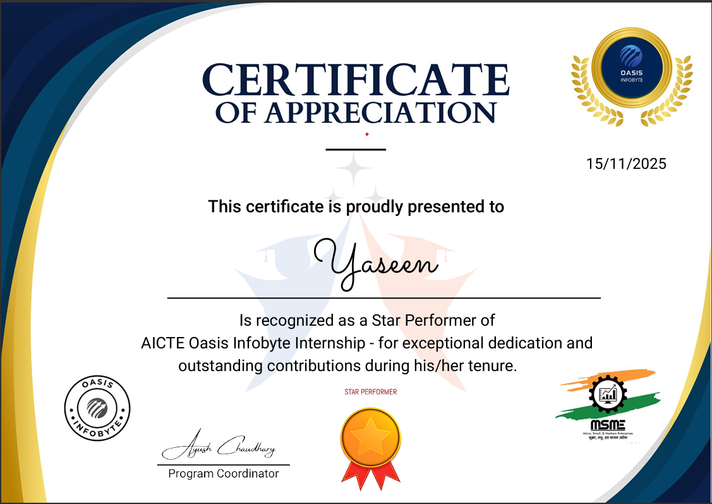
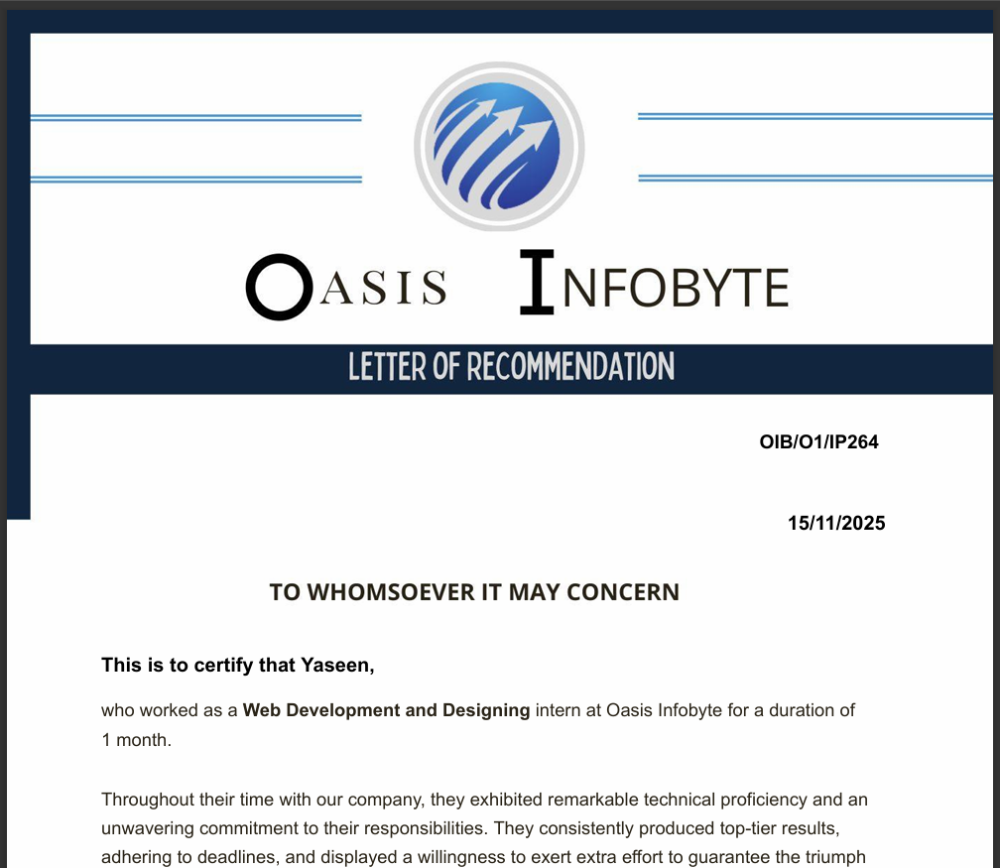
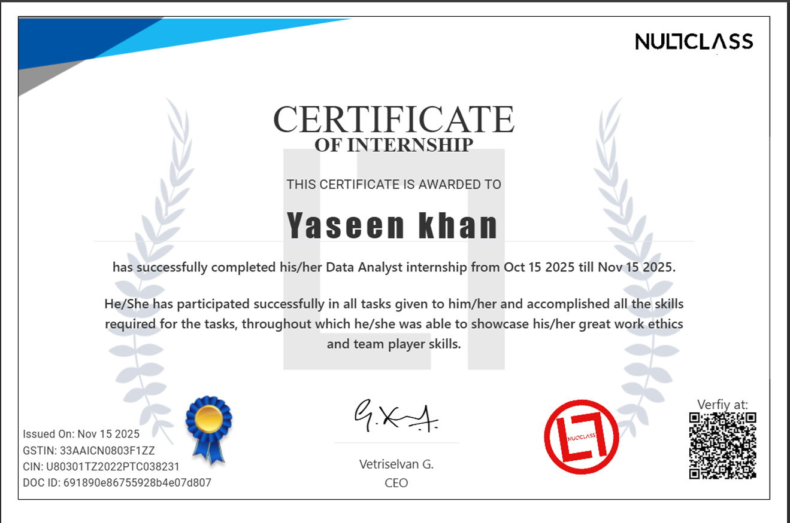
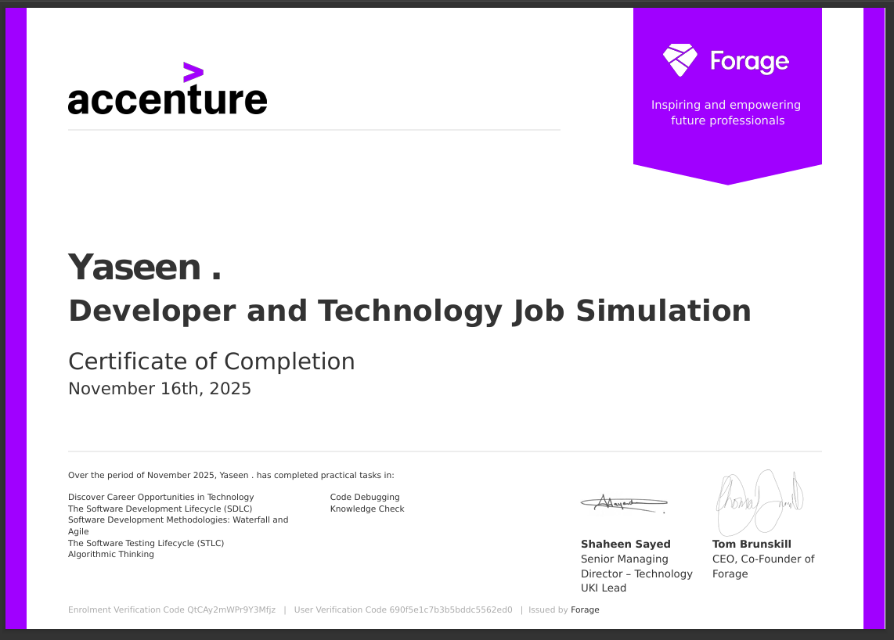
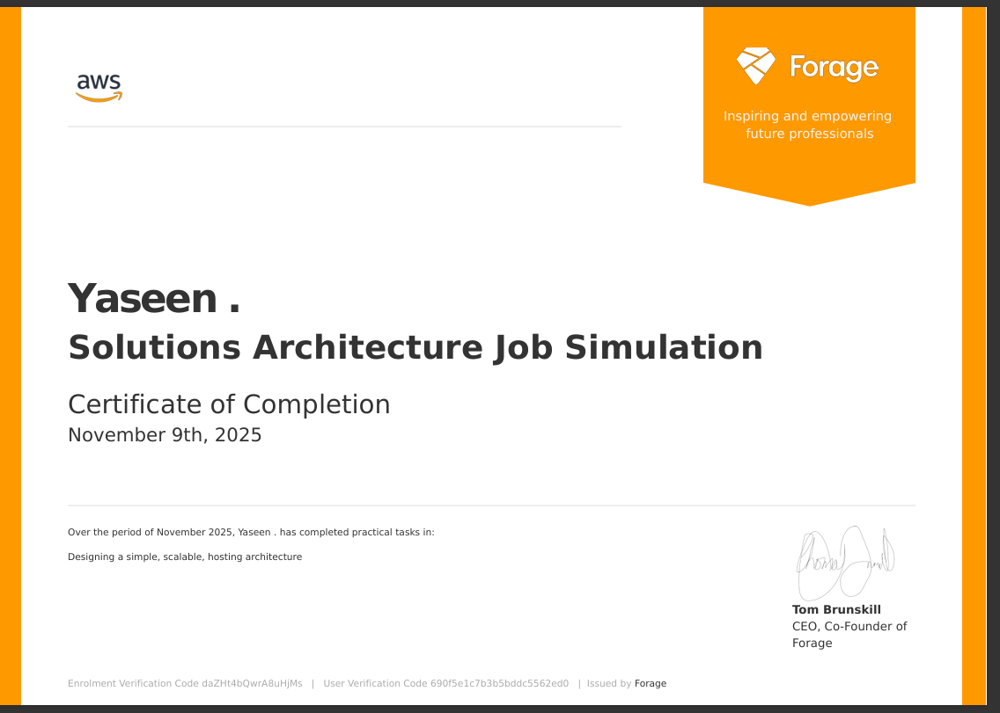
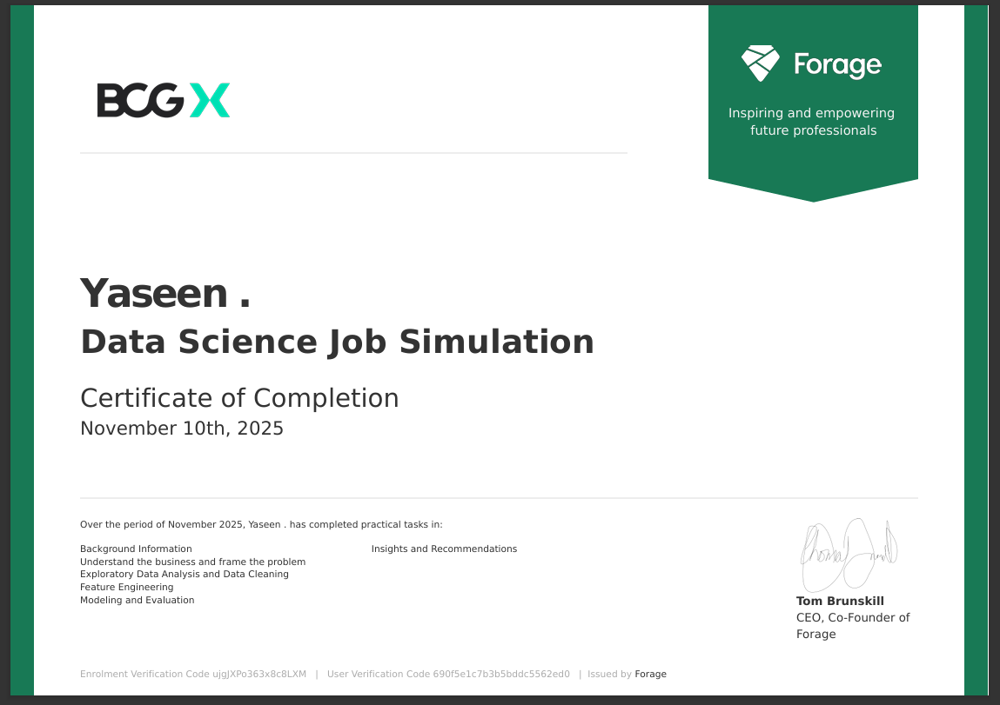
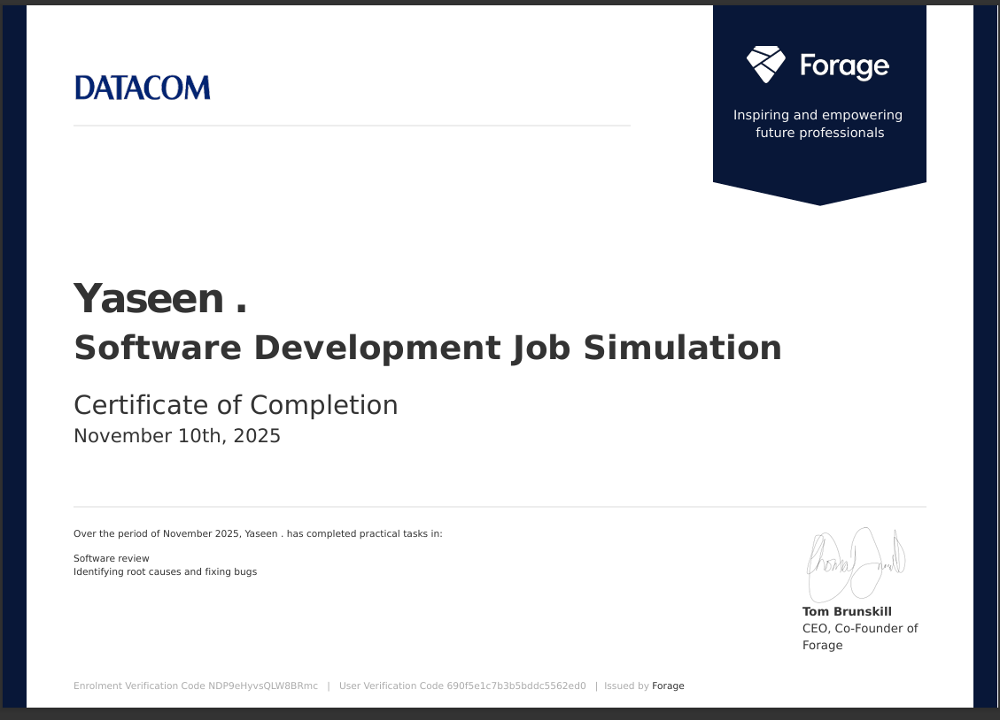
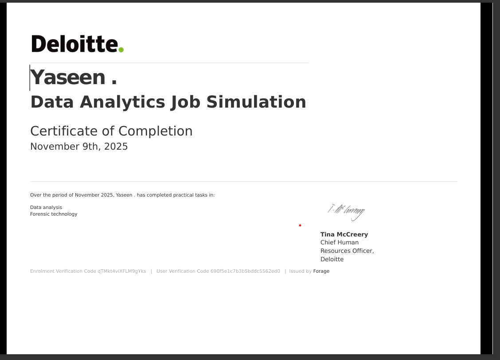
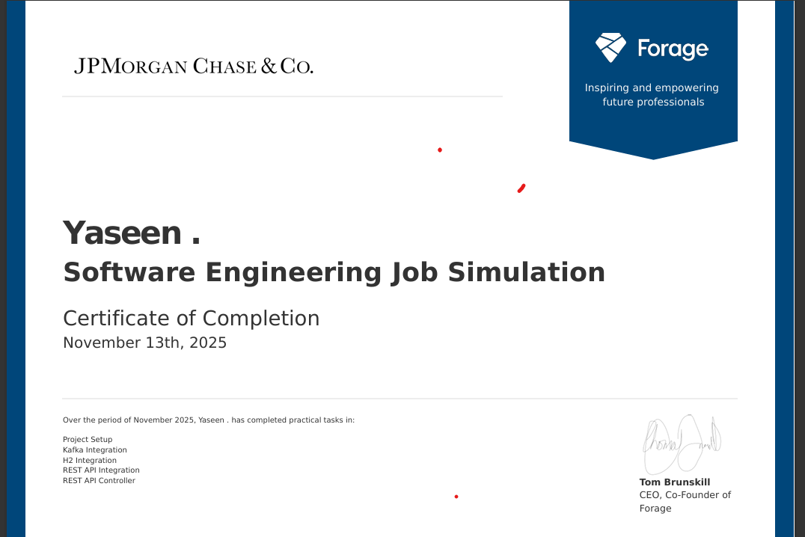
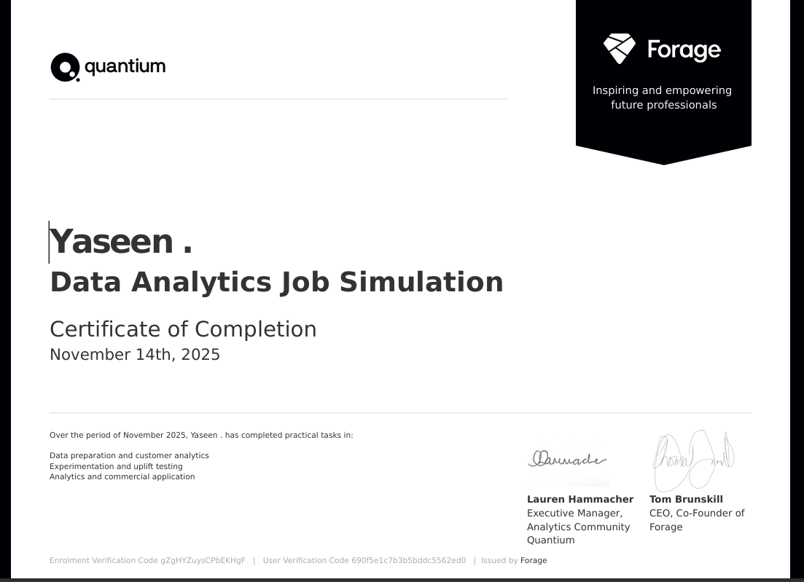

About Me
Dedicated ITI (COPA) student with practical experience across Web Development, Java Development, Data Analysis, and Data Science. I have completed internships with Oasis Infobyte, NullClass, and Cognifyz, where I worked on real projects and strengthened my technical abilities. Alongside this, I completed 7 global virtual programs from Deloitte, BCG, AWS, JPMorgan, Accenture, Datacom, and Quantium, gaining skills in analytics, cloud, finance, and business strategy. I enjoy building meaningful projects, improving my technical skills every day, and working toward future career opportunities in India and abroad
Skills
Projects
ATM Interface (Java)
A console-based ATM system built using Object-Oriented Programming. Features include user authentication, withdrawal, deposit, balance inquiry, fund transfer, and transaction history.
Tech Used: Java, OOP, IntelliJ IDEA
View Project →Number Guessing Game (Java)
A simple console-based number guessing game where the system generates a random number and the user attempts to guess it. Includes attempt limits, hints, and result feedback.
Tech Used: Java, IntelliJ IDEA
View Project →Responsive Landing Page
A modern and fully responsive landing page built using HTML, CSS, and JavaScript. Includes smooth animations, clean UI sections, and a mobile-first layout for all screen sizes.
Tech Used: HTML, CSS, JavaScript
View Project →Temperature Converter
A simple and interactive temperature conversion tool that converts values between Celsius, Fahrenheit, and Kelvin in real-time. Built with clean UI and instant calculation logic.
Tech Used: HTML, CSS, JavaScript
View Project →Customer Churn Analysis
Analyzed a Telecom customer dataset to identify patterns behind customer churn. Performed data cleaning, EDA, and derived insights on factors influencing customer retention.
Tech Used: Python (Pandas, NumPy, Matplotlib), Excel
View Project →Sales Insights Dashboard
Created an interactive Sales Dashboard showing revenue trends, top-selling products, customer segments, and region-wise performance.
Tech Used: Excel, Power BI
View Dashboard →Data Science Internship - Cognifyz Technologies
Analyzed real-world datasets to extract insights. Performed data cleaning, EDA, visualization, and predictive modeling.
Tech Used: Python (Pandas, NumPy, Matplotlib, Seaborn)
View Project →Movie Recommender System
A content-based movie recommendation system that suggests movies similar to the one entered by the user.
Tech Used: Python (Pandas, NumPy, Scikit-learn)
View Project →Internships
Web Development Intern – Oasis Infobyte
Duration: Oct–Nov 2025
- Created responsive pages using HTML, CSS, JavaScript.
- Completed projects including Landing Page, Portfolio & Temperature Converter.
- Received certificate + Letter of Recommendation.
Java Development Intern – Oasis Infobyte
Duration: Nov–Dec 2025
- Developed Java apps like Number Guessing Game & ATM Interface.
- Strengthened OOP concepts and file handling.
- Pushed all tasks to GitHub with README files.
Data Science Intern – Cognifyz Technologies
Duration: Nov–Dec 2025
- Working on ML tasks such as EDA, preprocessing, and model building.
- Using Pandas, NumPy, Matplotlib, and Scikit-learn.
- Gaining real industry-level dataset experience.
Data Analyst Intern – NullClass
Duration: Oct–Nov 2025
- Worked on real-world datasets involving cleaning, preprocessing, and analysis.
- Performed EDA using Python (Pandas, NumPy).
- Created visualizations to support decision-making.
- Earned an official internship certificate.
Certifications
- NullClass — Data Analyst Internship (View)
- Oasis — Web Development Internship (View)
- Oasis — Java Development Internship (View)
- Oasis LOR — Web Development (View)
- Forage Virtual Experience:
- Deloitte - Data Analytics
- BCG - Data Science
- Quantium - Data Analytics
- AWS - Solutions Architecture
- Datacom - Software Development
- JPMorgan - Software Engineering
- Accenture - Developer & Technology
Certificate Gallery
Oasis Infobyte – Web Dev Completion
Oasis Infobyte – Web Dev Appreciation
Oasis Infobyte – Letter of Recommendation
NullClass – Data Analyst Certificate
Accenture Developer & Technology
AWS – Forage Program
BCG – Forage Strategy Program
Datacom – Forage Program
Deloitte – Technology Job Simulation
JPMorgan – Software Engineering
Quantium – Data Analytics